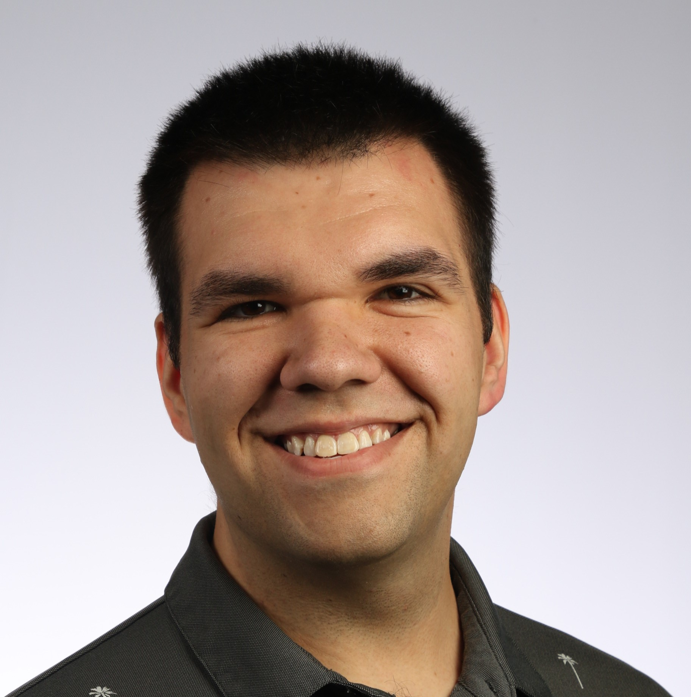

Astronomical Data Scientist
Dr. Zach Claytor
Dr. Zach Claytor holds a PhD in Astronomy from the University of Hawaiʻi at Mānoa and currently serves as an Astronomical Data Scientist at the Space Telescope Science Institute (STScI) in Baltimore.
His scientific research focuses on the rotational and magnetic properties of stars like the Sun.
Dr. Claytor leads archive operations for the Roman Space Telescope mission. In this capacity, he is responsible for coordinating the mission's critical data archive ahead of its scheduled launch on Aug 30, 2026.